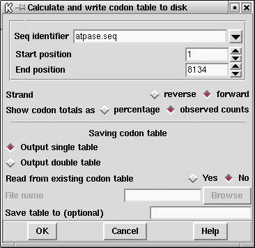

Codon usage tables can be calculated and written to the Output Window, and written to disk. If required the values found can be added to the counts in a pre-existing codon table, or when written out to disk they can be concatenated with an existing codon table file. In the first case the existing file will be read and added to the values calculated for the region defined by the user. In the latter, the values calculated for the region defined by the user will be written immediately after those from the existing table, hence producing a pair of tables joined end to end. An example of this is shown at the end of this section, and a more typical result is shown below.
Refering to the figure of the dialogue below, the user can select the
range and strand over which to
count. Note that irrespective of the strand being counted, the positions in the
sequence are always defined from the current 5' end. i.e. to count over
bases 1 to 100 the user should set the Start position to 1 and the End
position to 100.
The values in the table can be expressed as
observed counts or as percentages of usage for the cognate amino acid.

The table can be output as a single table (as shown above), or as a
double table (shown below). The user can request that the counts from an
existing table be read and added to the counts which are about to be
calculated, in which case the "File name" text window will be activated.
If the user selects to output a double table, this dialogue will also be
activated. To save the output in the selected form to a file, the user
should fill in the "Save table to" text window.
Two of the protein coding search functions
(
see section Codon usage method)
and
(
see section Author test)
work best using a double
codon table. The top table should contain the codon usage for the coding
regions and the bottom table the usage for non-coding regions. A typical
double codon table of this sort is shown below.
To calculate such a table using spin the following steps are
required. First calculate the codon usage for a typical coding
segment and save the resulting table in table A. Then use the option
again, but this time select to "Output double table", and type the name
of table A into the "File name" text box. Next define the start and end
points of a non-coding region, and save the results to double table
B. The file containing double table B is now suitable for use by the
protein gene searching functions.
![[picture]](spin_count_codons_t,5.34167in.png.html)
(Click for full size image)
===============================================
F ttt 4 S tct 30 Y tat 5 C tgt 9
F ttc 35 S tcc 21 Y tac 15 C tgc 5
L tta 4 S tca 7 * taa 0 * tga 0
L ttg 24 S tcg 9 * tag 0 W tgg 15
===============================================
L ctt 71 P cct 1 H cat 17 R cgt 37
L ctc 39 P ccc 2 H cac 15 R cgc 18
L cta 0 P cca 14 Q caa 87 R cga 1
L ctg 4 P ccg 0 Q cag 18 R cgg 1
===============================================
I att 33 T act 30 N aat 12 S agt 2
I atc 53 T acc 20 N aac 59 S agc 5
I ata 1 T aca 3 K aaa 23 R aga 38
M atg 32 T acg 0 K aag 117 R agg 0
===============================================
V gtt 30 A gct 71 D gat 58 G ggt 5
V gtc 22 A gcc 54 D gac 32 G ggc 1
V gta 7 A gca 6 E gaa 76 G gga 49
V gtg 5 A gcg 0 E gag 101 G ggg 1
===============================================
===============================================
F ttt 10 S tct 8 Y tat 7 C tgt 4
F ttc 12 S tcc 2 Y tac 4 C tgc 3
L tta 6 S tca 4 * taa 7 * tga 10
L ttg 11 S tcg 3 * tag 4 W tgg 6
===============================================
L ctt 5 P cct 3 H cat 4 R cgt 0
L ctc 6 P ccc 1 H cac 4 R cgc 0
L cta 3 P cca 1 Q caa 9 R cga 5
L ctg 6 P ccg 3 Q cag 5 R cgg 2
===============================================
I att 13 T act 6 N aat 7 S agt 4
I atc 7 T acc 0 N aac 3 S agc 2
I ata 12 T aca 5 K aaa 9 R aga 16
M atg 7 T acg 3 K aag 4 R agg 4
===============================================
V gtt 6 A gct 2 D gat 8 G ggt 4
V gtc 2 A gcc 1 D gac 3 G ggc 1
V gta 5 A gca 1 E gaa 9 G gga 9
V gtg 4 A gcg 0 E gag 3 G ggg 0
===============================================
Last generated on 25 April 2016.